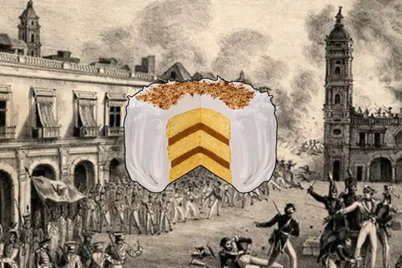

Un conflicto entre México y Francia ocurrido en 1838
La Guerra de los Pasteles fue un conflicto armado entre México y Francia. Se le llamó así porque uno de los reclamos franceses fue el de un pastelero que decía que su negocio había sido dañado durante disturbios en México.

| Aspecto | Información |
|---|---|
| Años | 1838 - 1839 |
| Países enfrentados | México y Francia |
| Lugar principal | Veracruz |
| Nombre curioso | Se relaciona con el reclamo de un pastelero francés |
La guerra terminó cuando México aceptó pagar una indemnización a Francia. Aunque fue un conflicto corto, mostró la debilidad económica y política que tenía México en esa época.
Si quieres saber Mas
Clik Aqui